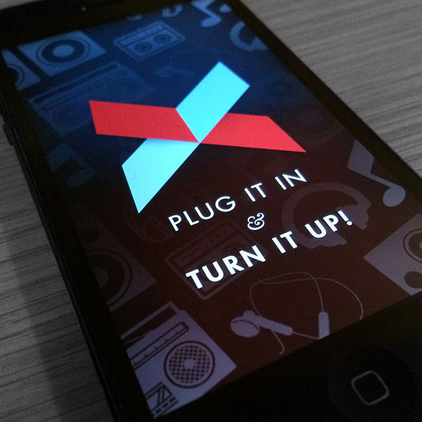
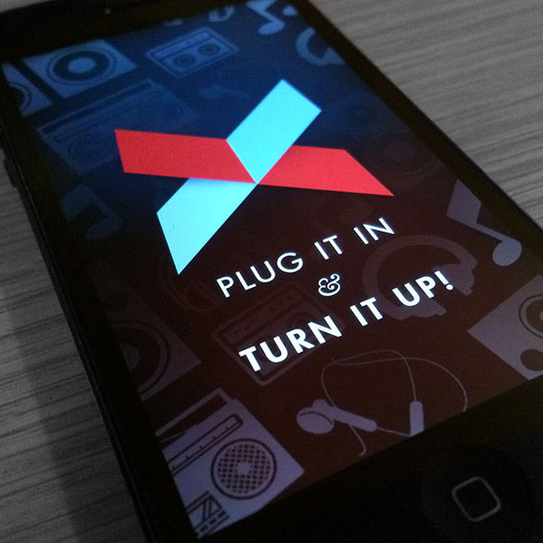

Crossfader
Crossfader is the world’s simplest DJ app. Tilt the phone to mix seamlessly between tracks, and broadcast your mix live across the globe — plus weekly curated playlists of the hottest music.
At Crossfader we built an amazing product that a core group of users were fanatic about. The feedback from our obsessed users was the fuel we used to keep pushing the experience to be as great as it could be. Ultimately, we were unable to scale our hyper-engaged user base, or implement a business model that allowed us to become profitable.
As the sole product designer, I worked closely with the entire team to define the functionality and flow of new features, create and iterate on interaction and visual designs, then oversee (for iOS) and execute (on the web - writing JS & CSS / our last website version was built in React JS) the implementation of final designs. After shipping updates, I would synthesize user feedback and look at usage data to guide the next release. Also created the logo, branding, and essentially everything Crossfader-related. Crossfader is available in the app store.
Playlist & Prototyping
My first challenge at Crossfader was to redesign the ‘playlist’ experience. After brainstorming many possible interactions, we prototyped the ‘barn doors’ experience and were captivated by how engaging it was. The direct manipulation was fun and simple, and made mixing through a playlist very fun. Prototyping interactions was essential to our process as we tried to create the most intuitive and fluid mixing experience possible.


The Cross — 2013/2014
Towards the end of 2013, we were deliberating on how to best share content from the app. We used to export recordings to Soundcloud. But after the bot takedowns started, this was no longer a feasible solution. We had to do something totally different.
The way I thought about the problem was this : what is magical about Crossfader? Being able to play two songs at once, seamlessly, and mixing them together. So what’s the smallest sharable unit? The two songs, playing at any given moment, together.
The Cross was born. Crosses were easy to make, easy to share, and playable on the web. You could open them up and start mixing them yourself. It was like a musical snapshot. Over the next year, we explored many ways to ‘consume’ crosses, from feeds to an auto-magical radio that stitched crosses together to create a crowdsourced mixtape.
 

Research
I've interviewed over 50 of our top users, and learned tons qualitatively and quantitatively about how our top users used the app - about what they loved about it - what they hated - what they wish they could do - how they used it - and how I could improve those experiences for them.
Onboarding — 2015
We found that the largest barrier to retention was that users never had the 'Ah-Hah' moment. The instrument part of the app was difficult to understand how to use without being shown. In lieu of pop-over videos, we integrated these animations as overlays to teach new users the core Crossfader mechanics.

Recorded Mixes — 2014/2015
After a year, crosses seemed to feel flat. They didn’t capture the expressiveness and the joy that came from mixing with Crossfader - fading from song to song, creating a unique performance. Sentiment from the hours I spent talking to users hinted that they wanted something more, to share their mixing as widely as possible, and to save and listen back to their sessions. We spent the rest of the year building out the app to support recorded mixes, we axed the ‘cross’, and pushed the product towards where it would ultimately support live streaming Crossfading. We were moving away from what felt like ‘spammy’ snapshots to more carefully crafted mixes, that the creators were very proud of.
Live — 2015/2016
Asynchronous mixing, listening, and liking was engaging — but we knew that our users yearned for that *real* conncetion with eachother. On August 20, 2015, we released version 5, which supported live Crossfading. The concept of ‘recording’ was replaced with ‘going live’. Over the past 6 months we’ve seen steady growth in our most engaged cohort of users, and community emerge with things like regular digital festivals and radio shows.

UX Overhaul — 2016
The last major release of Crossfader (5.5) focuses on many minor UX improvements (performance, in-app notifications, tagging djs, improved profile customization, default mix photos) and a new visual consistency that gets ‘style’ out of the way. Crossfader was always a content-first platform, and this latest release gives our users more control than ever over how they express themselves musically and visually within the app.